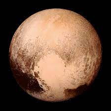
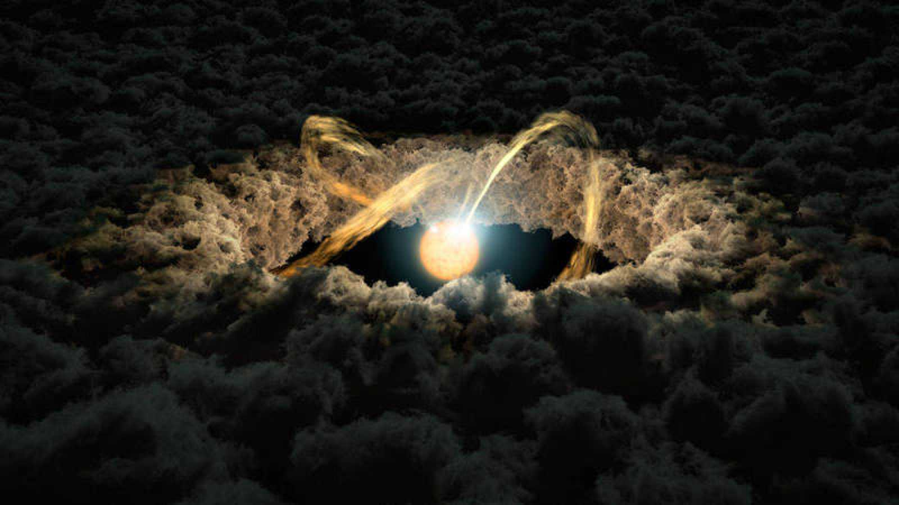
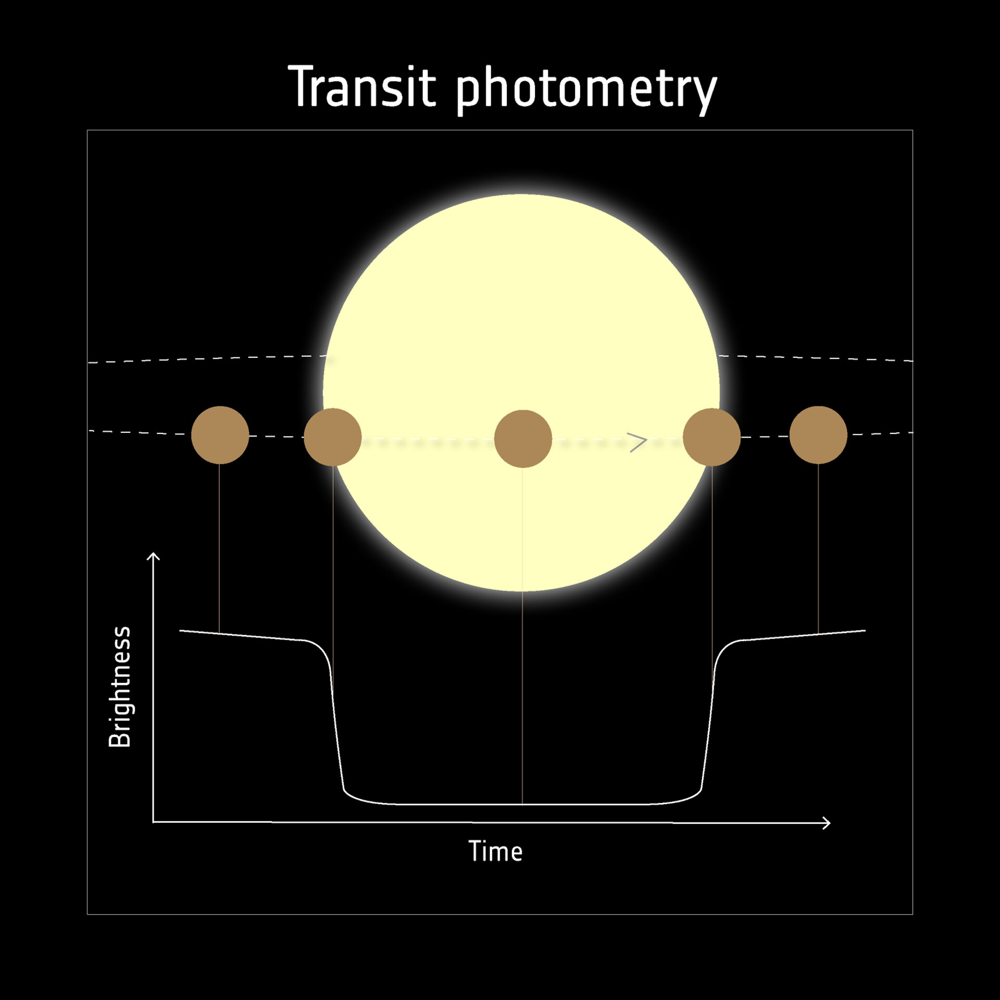

Un planeta es un objeto astronómico que orbita una estrella y que es lo
suficientemente masivo como
para ser redondeado por su propia gravedad, pero no lo suficientemente masivo como para causar
fusión termonuclear

Variedad de Planetas: Los planetas son cuerpos celestes que orbitan
alrededor de estrellas y no emiten luz propia, sino que reflejan la luz de su estrella.
Aunque hemos explorado y estudiado principalmente los planetas de nuestro sistema solar, se cree que
hay innumerables planetas en otras galaxias y sistemas estelares.
Diversidad de Tamaños y Composiciones: Los planetas pueden variar en
tamaño desde planetas enanos y súper Tierras hasta gigantes gaseosos como Júpiter.
Sus composiciones también difieren ampliamente, algunos son predominantemente rocosos como la Tierra
y Marte, mientras que otros son en su mayoría gaseosos, como Júpiter y Saturno.

Zona Habitable: Algunos planetas están en la "zona habitable" alrededor
de sus estrellas, donde las condiciones podrían ser adecuadas para la existencia de agua líquida en
la superficie, un factor clave para la vida tal como la conocemos. Esta zona depende de la estrella
en cuestión y de su luminosidad.

Formación Planetaria: La formación de planetas suele ocurrir en discos
de gas y polvo alrededor de estrellas jóvenes. Los planetas se forman a medida que los materiales en
estos discos se acumulan en núcleos sólidos que luego pueden atraer más material para crecer en
tamaño.

Detección de Exoplanetas: La detección de exoplanetas se realiza
principalmente a través de métodos como el tránsito (cuando un planeta pasa frente a su estrella,
disminuyendo temporalmente su brillo) y la velocidad radial (detectando el movimiento de una
estrella debido a la atracción gravitacional de un planeta).